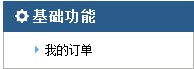
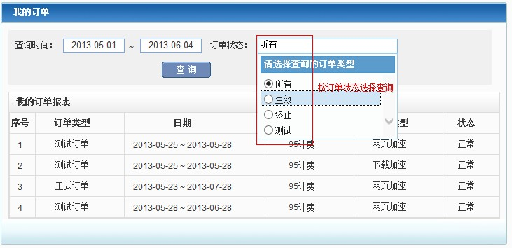
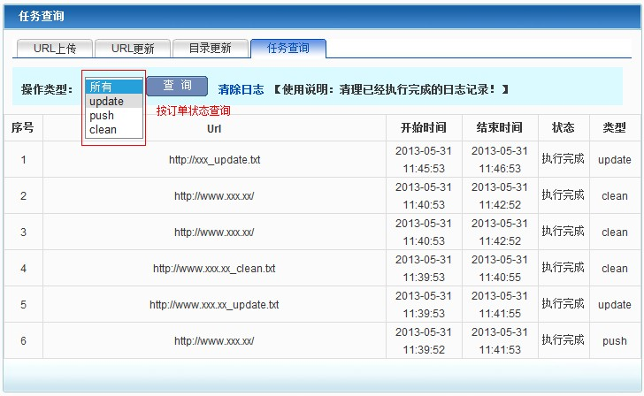

- 帮助
-
目录
1. 简介
2. 基础功能
2.1 我的订单
3. 业务分析
3.1 带宽查询
3.1.1 频道带宽
3.1.2 Flash带宽图的使用
3.2 流量统计
3.3 访问概况
3.3.1 请求数统计
3.3.2 PV值统计
3.4 访客分析
3.5 URL分析
3.6 来源统计
3.7 日志下载
3.8 内容管理
3.8.1 功能简介
3.8.2 操作指南
3.8.3 注意事项
4. 术语解释
睿江cdn管理平台，是睿江为客户提供的专业化、透明化、人性化的一站式管理系统。该系统集内容管理、日志下载、计费信息、带宽统计、业务分析五个功能为一体，客户单点登录，即可便捷地体验到睿江提供的优质CDN服务。
针对每种加速类型，睿江在基础功能里免费向用户提供我的订单功能，如图所示。

我的订单模块为用户提供详细的计费信息查询，以订单为计费单元进行统计，且提供历史计费信息的查询。
操作指南：界面上方是查询条件输入区，用户选择时间、订单状态（单选），点击查询可查看服务单计费信息。

针对各个加速业务类型的频道，睿江为用户提供了丰富的业务分析信息，包括流量统计、访问概况、访客分析、URL分析、来源统计、日志下载、内容管理等。
根据睿江业务的区域分布，系统对各加速区域的业务进行了独立分析，只要您购买了睿江某一加速区域的服务，系统就向您提供相应加速区域的业务分析。目前睿江的业务分布有：中国大陆、香港、海外。
带宽统计模块为用户提供了频道在运营商、地区的分布统计信息，帮助用户从不同角度了解网站运营情况。不同业务类型的带宽信息在相应的业务类型子菜单下面，如网页加速业务的频道带宽信息在“网页加速”子菜单中。
此外，系统提供各个加速区域的带宽统计，只要您购买了睿江某加速区域的服务，系统就向您提供相应加速区域的带宽统计。目前睿江的业务分布有：中国大陆、香港、海外。
注：系统提供2年内历史数据查询，查询时间跨度不能超过1年，当查询时间跨度在1个月之内时，显示原始数据，当超过1个月时，显示压缩数据（一个小时一个点）。不论带宽图显示是原始数据还是压缩后数据，Excel下载都是提供原始数据。
频道带宽提供频道的实时带宽查询，不过由于是计费的基础数据，为了保证准确性，经过多层的验证和核查才最终展示出来，故频道带宽延迟在5-10分钟左右。
界面上方是查询条件输入区，用户选择频道（可多选）、时间、加速区域（可多选）、ISP（可多选），点击查询后系统显示符合条件的带宽图，数据格式及含义请参见实际页面中的详细说明。
注：加速区域只有单选中国大陆时，ISP才可作为查询条件，因为这里的ISP为中国大陆特有。
1. 当鼠标移动到带宽图时，左上侧显示的是当前所指定的时间点的带宽值，右上侧显示的是当前所指定的时间点。当鼠标不在带宽图内时，左右上角分别显示part2部分的峰值带宽和时间范围。
2. 左右拖动，可以拖动显示的时间段。
3. 中间部分是缩略框，可以控制上部带宽图的显示时间段，拖动左右边框，从而起到放大和缩小带宽图的作用。
4. 鼠标移动到中间部分的缩略框位置，可以左右拖动改变带宽图显示的时间段。
5. 底部的时间操作，可以快速且精准地控制上部带宽图的显示时间段，如图，左侧可以手动输入时间，右侧提供快速的切换。
流量统计模块提供了流量类型分布、ISP分布、地区分布等信息的统计，系统根据用户的权限显示相应的报表。
打开相应业务下的流量统计菜单，系统默认显示该业务类型所有频道当天在中国大陆区域加速的流量统计。如下图，界面上方是查询条件输入区，用户选择频道（可多选）、时间、加速区域（单选），点击查询后界面将显示符合条件的流量分布统计报表，数据格式及含义请参见实际页面中的详细说明。
流量类型比例提供流量在边缘节点、中间缓存、回源的分布统计，流量类型的定义详见术语解释章节。
流量ISP分布是流量在各个运营商的分布，目前统计主要运营商包括电信、网通、铁通、移动、教育网等。
流量按天统计。
省份地区流量排行报表提供流量在各个省份的分布，点击更多，可以查看流量在所有省份的分布情况，其中未知是指不确定是哪个省份的流量。
访问概况模块提供了请求数和PV值的时间分布、地区分布等统计，系统根据用户的权限显示相应的报表（其中PV值的统计为网页加速、WSA加速特有）。
打开相应业务类型下的访问概况菜单，系统默认显示该业务类型所有频道当天在中国大陆区域服务的请求数统计。用户选择要查询的频道（可多选）、某段时间、某加速区域（单选），点击查询后界面将显示符合条件的请求数统计报表，数据格式及含义请参见实际页面中的详细说明。
请求数回源缓存分布报表提供边缘节点请求数和回源请求数的分布统计，请求数类型的定义详见术语解释章节。
请求数趋势图提供请求数的时间分布统计，当查询时段为1天以内时，请求数按小时统计，当查询时间大于1天时，请求数按天统计。
省份地区请求数排行报表提供请求数在各个省份的分布，其中未知是指不确定是哪个省份的请求数。
打开相应业务类型下的访问概况统计菜单，系统默认显示该业务类型的请求数统计，用户选择PV统计，系统显示该业务类型所有频道当天在中国大陆区域服务的PV统计。用户选择频道（可多选）、时间、加速区域（单选），点击查询后界面将显示符合条件的PV统计报表，数据格式及含义请参见实际页面中的详细说明。

PV值趋势图提供PV值的时间分布统计，当查询时段小于等于1天时，按小时统计，大于1天时，按天统计。
省份PV排行提供PV在中国大陆各省份的分布，其中未知是指不确定是省份的PV。
访客分析模块提供了访客的时间分布、地区分布以及top100访客的报表统计，系统根据用户的权限显示相应的报表。这里以独立IP代表一个访客，独立IP是指一段时间内的唯一IP数，目前一段时间有一天和一小时。
打开相应业务类型下的访客分析菜单，系统默认显示该业务类型所有频道最近7天的访客统计。用户选择频道（可多选）、时间、加速区域（单选），点击查询后界面将显示符合条件的访客分析统计报表，数据格式及含义请参见实际页面中的详细说明。
独立IP趋势图提供独立IP的时间分布统计，当查询时间段在1天以内时，按小时统计，当大于1天时，按天统计。由于独立IP是指一段时间内的独立IP数，故一天24小时累加起来的独立IP数会大于按天统计的独立IP数。

Top10访客按请求数排行提供独立IP按请求数排行，且提供对应流量的统计。点击更多，可以查看Top100访客信息。
URL分析模块提供了URL按流量排行、URL按请求数排行以及URL按错误请求数排行等信息的统计，系统根据用户的权限显示相应的报表。
打开相应业务类型下的URL分析菜单，系统默认显示该业务类型所有频道当天在中国大陆区域加速的URL分析统计。用户选择频道（可多选）、时间、加速区域（单选）、某URL类型（可自定义），点击查询后界面将显示符合条件的URL分析统计报表，数据格式及含义请参见实际页面中的详细说明。
为了满足用户对特定URL的关注，系统不仅提供了URL类型的选择（网页、图片、样式等），并且提供个性化定制，提供包含字符、不包含字符、以字符结尾、以字符开始、符合正则表达式等定制。
Top10URL按流量排行提供热门URL按流量排行信息，且提供对应请求数的统计。点击更多，可以查看更多信息，其中各个字段根据用户权限进行相应显示。
Top10URL按请求数排行提供热门URL按请求数排行信息，且提供对应流量的统计。点击更多，可以查看更多信息，其中各个字段根据用户权限进行相应显示。
来源统计模块提供了TOP来源网站、TOP搜索引擎、TOP搜索关键字等信息的统计，系统根据用户的权限显示相应的报表。
打开相应业务类型下的来源统计菜单，系统默认显示该业务类型所有频道当天在中国大陆区域加速的来源统计。用户选择频道（可多选）、时间、加速区域（单选），点击查询后界面将显示符合条件的来源统计报表，数据格式及含义请参见实际页面中的详细说明。
Top10来源网站按请求数排行提供来源网站的排行信息，且提供对应流量的统计。点击更多，显示Top100来源网站按请求数排行信息；查看统计列，提供来源网站引向的目标URL的统计查看，如上图所示。
Top10搜索引擎按请求数排行提供搜索引擎的排行信息，且提供对应流量的统计。
Top10搜索关键字排行提供搜索关键字的排行信息，且提供对应流量的统计。
日志下载模块为客户提供原始日志下载，以频道为单位，默认按天打包，一个频道一天一个压缩包，用户点击下载地址列，可以下载相应的日志信息。由于有些频道日志量太大，一天一个包不易下载，睿江也为用户提供半小时打包的选择，用户可以根据情况进行选择。
如下图所示，域名.txt.all.tar.gz 为全部访问日志， 域名.txt.not200.tar.gz 为访问http返回码不为200的日志。
注：系统默认保留14天日志，逾期不予保留。
内容管理为用户提供即时更新节点上内容的功能，使用情况如下：当用户由于新增、删除、修改等操作更新了网站上的某些内容，想立即让网民看到，可是设定的过期时间还没有到，这时用户就可以使用该功能即时的刷新节点内容。
内容管理的实现方式有两种：URL更新和目录更新。URL更新是更新指定URL资源，提交后系统会在5-10分钟内全国生效；目录更新是更新该目录（包括子目录）下面的所有内容，如更新http://www.test.com/，该目录下的所有内容都将进行更新，提交后会在10-20分钟之内全国生效。
此外，系统还提供任务查询功能：用户可以查看提交后的任务的执行状态以及执行结果。当然，用户也可以直接通过登录浏览器查看是否生效（请先清空浏览器的缓存）。
用户根据实际情况选择URL更新或者目录更新，根据页面提示信息输入正确的URL/目录实现内容更新（鼠标移动到
 ，浮动窗口显示对应解释说明）。
，浮动窗口显示对应解释说明）。
目录/URL更新选择：
当一个目录下文件都需要更新或者需要更新的URL超过100条时，建议采用目录更新。
点击提交后，系统将向睿江各个节点发送URL/目录更新命令，睿江各个节点接收到命令后进行URL/目录更新操作，用户可以在任务查询页面查看任务更新情况。
任务状态：
update、push、clean，update表示更新状态，push表示正在推送，clean表示已执行完毕。开始时间：
任务开始执行的时间。结束时间：
任务执行完毕的时间。
1. 系统只接受在睿江加速的频道的URL推送。
2. 对于非同名文件的更新，请推送引用该文件的htm/html等页面，如http://www.test.com/index.html页面下的某一图片1.jpg，改为了2.jpg，这时推送http://www. test.com/index.html即可。
3. 短时间内请尽量不要重复提交同一URL，若系统上次收到的某条URL还未处理完，则下次提交的同一URL将被系统忽略。两次提交同一URL的时间间隔最好在5分钟以上。
4. 每个用户的每天推送上限为URL条数为5000条，目录为500条，超过系统将拒绝提交推送。
订单号
服务单的唯一标示，服务单由一个或多个频道组成，同一服务单内的频道具有相同的加速类型、计费方式等。加速区域
每个计费地区有唯一的加速区域名称，由睿江根据业务分布情况而灵活定义，目前有中国大陆、香港、海外。ISP
互联网服务供应商。流量类型
边缘节点流量：由睿江边缘节点向最终访客提高服务所产生的流量。
回源流量：由于睿江节点无缓存或者缓存过期，需要回源取响应所产生的流量。
中间缓存流量：由睿江边缘节点到睿江中间节点产生的流量。PV值
page view简称PV，一个PV指的是一次从网站下载一个页面的请求（这里只记录http状态码小于400的请求），目前缺省统计的网页格式包括htm、html、php、asp、shtm、shtml、aspx、xml、xhtml、xsl、cfm、htx、htmls、phtml、jsp、php3、txt、wml、 lhtml、pl、cgi、cfm、acgi、srch和qry请求数
为了获得服务器上的一个资源（可以是文本、图像或任何可以被包含在页面内的元素），浏览器和它连接的服务器之间进行的一次单一连接。
边缘节点请求数：由睿江边缘节点直接向最终用户提供服务产生的请求数。
回源请求数：由于睿江节点没有缓存或者缓存过期，回源取响应的请求数。独立IP
每一个独立IP代表一个访客，独立IP是一段时间的访问网站的唯一IP个数，目前统计的时间段有1小时和1天。 当查询时间段在1天以内时，按小时统计，当大于1天时，按天统计，故一天24小时累加起来的独立IP数会大于按天统计的独立IP数。URL
统一资源定位符（Uniform Resource Locator），表示web资源的地址。来源网站
引导访客进入某网站的网站。下载速度
对于某次请求而言，下载速度由该次请求的下载大小除以下载时间得出，平均下载速度即为下载速度之和/请求数，为了更客观的统计，这里只统计2xx状态码的下载速度。注：这里的下载速度是针对一次请求，客户端如果用多线程下载，那客户端实际的下载速度可认为是多个线程的下载速度之和，会大于这里统计的下载速度。状态码
2xx（成功）
200（成功）服务器已成功处理了请求。
206（部分内容）服务器成功处理了部分 GET 请求。
3xx（已重定向）
301（永久移动）请求的网页已被永久移动到新位置。
302（临时移动）服务器目前正从不同位置的网页响应请求，但请求者应继续使用原来位置来进行以后的请求。
304（未修改）自从上次请求后，请求的网页未被修改过。服务器返回此响应时，不会返回网页内容。
4xx（请求错误）
401（未授权）请求要求进行身份验证。
403（已禁止）服务器拒绝请求。
404（未找到）服务器找不到请求的网页。
415（不支持的媒体类型）请求的格式不受请求页面的支持。
5xx（服务器错误）
500（服务器内部错误）服务器遇到错误，无法完成请求。
501（尚未实施）服务器不具备完成请求的功能。
502（错误网关）服务器作为网关或代理，从上游服务器收到了无效的响应。
503（服务不可用）目前无法使用服务器（由于超载或进行停机维护）。
504（网关超时）服务器作为网关或代理，未及时从上游服务器接收请求。